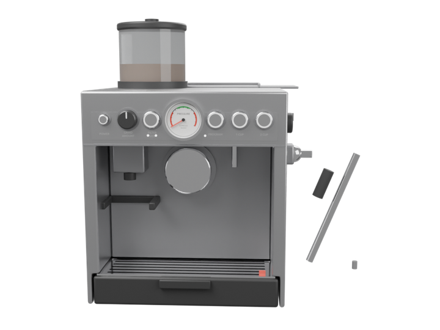
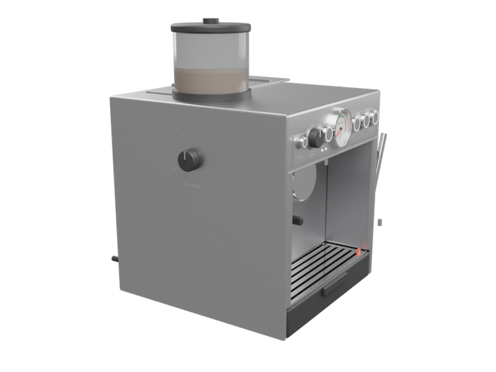
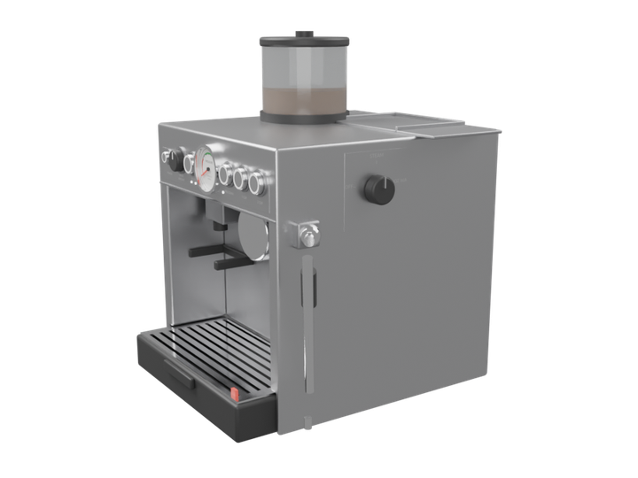
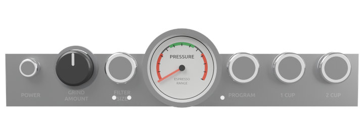
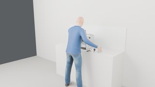
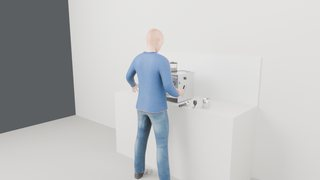
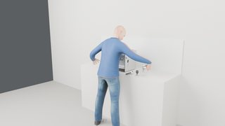
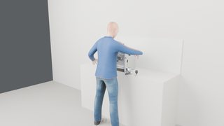
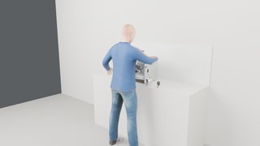
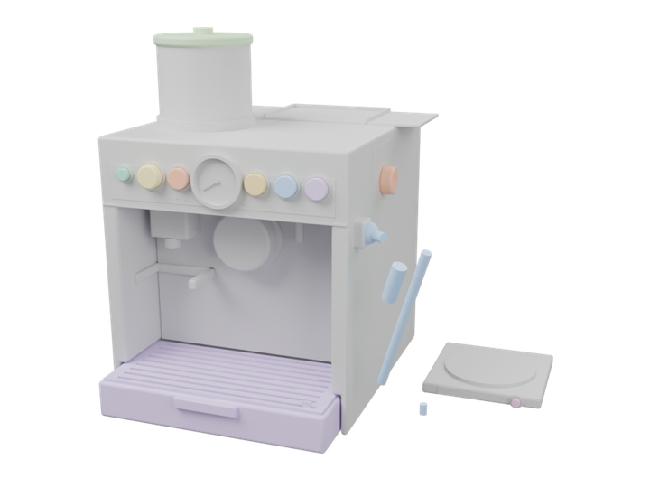

Coffee machine coffee_machine procedural, this project
4 tasks · 12 videos · 12 movable parts · 5 contact-tested keys · 15 hand anchors

front: grinder outlet and cradle, panel, group head, drip tray 
left side: grind size dial, hopper 
right side: steam dial, wand swung out 
panel: POWER, GRIND AMOUNT, FILTER SIZE, gauge, PROGRAM, 1 CUP, 2 CUP Tasks and videos
One block per task: the action sentences it was given (each one a family with grounded arguments, with what the executor made of it), the three camera videos of its recorded run (external, first-person, hand close-up), the phases, the step timeline and the key contacts measured in MuJoCo. Click a timeline bar or a keyframe to jump the videos there.
coffee_make_espresso coffee_machine · 55.5 s · 32 steps · hands: left, right 1/1 key presses contact-tested ✓ status sentence family grounded target normalized achieved why refused succeeded move the portafilter into the grinder cradle move portafilter grasp handle, lift_m 0.14, place cradle_rest distance_to_place_m 0.0 succeeded wait 3 seconds wait duration_s 3.0 succeeded move the portafilter back where it was move portafilter grasp handle, lift_m 0.14, place prop_home.portafilter distance_to_place_m 0.0 succeeded move the tamper onto the portafilter move tamper grasp knob, lift_m 0.12, place tamp_on_basket distance_to_place_m 0.0 succeeded wait 1 second wait duration_s 1.0 succeeded move the tamper back where it was move tamper grasp knob, lift_m 0.12, place prop_home.tamper distance_to_place_m 0.0 succeeded move the portafilter into the group head move portafilter grasp handle, lift_m 0.14, place group_locked distance_to_place_m 0.0 succeeded move the cup under the group head move cup grasp handle, lift_m 0.14, place cup_place distance_to_place_m 0.0 succeeded press the 2 CUP key press btn_two_cup times 1, hold_s 0.3 1/1 presses activated succeeded wait 4 seconds wait duration_s 4.0 succeeded move the cup back where it was move cup grasp handle, lift_m 0.14, place prop_home.cup distance_to_place_m 0.0
Grind into the portafilter, tamp, lock it into the group head and pull a double shot into the cup
coffee_make_espresso · external camera · 55.5 scoffee_make_espresso · first-person camera · 55.5 scoffee_make_espresso · hand close-up camera · 55.5 s
▶ play all three pause ↺ restart
a01_settle move portafilter → cradle_rest wait · fx_grind move portafilter → home: portafilter move tamper → tamp_on_basket move tamper → home: tamper move portafilter → group_locked move cup → cup_place press btn_two_cup wait · fx_brew, gauge_needle, display move cup → home: cup
gaze left hand right hand body device 0s 5s 10s 15s 20s 25s 30s 35s 40s 45s 50s 55s a01_settle · idle · 0.0–1.0 s · kinematic a02_look_portafilter · look_at · 1.0–1.6 s · kinematic a03_move_portafilter · pick_place right · 1.0–5.8 s · assisted_grasp a03_move_portafilter a04_right_back · retreat right · 5.8–7.2 s · kinematic a05_wait · idle · 7.2–10.2 s · kinematic a06_look_portafilter · look_at · 10.2–10.8 s · kinematic a07_move_portafilter · pick_place right · 10.2–15.0 s · assisted_grasp a07_move_portafilter a08_right_back · retreat right · 15.0–16.4 s · kinematic a09_look_tamper · look_at · 16.4–17.0 s · kinematic a10_move_tamper · pick_place right · 16.4–20.4 s · assisted_grasp a10_move_tamper a11_right_back · retreat right · 20.4–21.8 s · kinematic a12_wait · idle · 21.8–22.8 s · kinematic a13_look_tamper · look_at · 22.8–23.4 s · kinematic a14_move_tamper · pick_place right · 22.8–26.8 s · assisted_grasp a14_move_tamper a15_right_back · retreat right · 26.8–28.2 s · kinematic a16_look_portafilter · look_at · 28.2–28.8 s · kinematic a17_move_portafilter · pick_place right · 28.2–32.7 s · assisted_grasp a17_move_portafilter a18_right_back · retreat right · 32.7–34.1 s · kinematic a19_look_cup · look_at · 34.1–34.7 s · kinematic a20_move_cup · pick_place left · 34.1–38.5 s · assisted_grasp a20_move_cup a21_left_back · retreat left · 38.5–39.9 s · kinematic a22_look_btn_two_cup · look_at · 39.9–40.5 s · kinematic a23_reach_btn_two_cup · reach right · 39.9–41.4 s · kinematic a24_align_btn_two_cup · pregrasp right · 41.4–42.1 s · kinematic a25_press_btn_two_cup · press right · 42.1–42.8 s · contact_dynamics a26_release_btn_two_cup · release right · 42.8–43.3 s · kinematic a27_right_back · retreat right · 43.3–44.7 s · kinematic a28_wait · idle · 44.7–48.7 s · kinematic a28_wait a29_look_cup · look_at · 48.7–49.3 s · kinematic a30_move_cup · pick_place left · 48.7–53.1 s · assisted_grasp a30_move_cup a31_left_back · retreat left · 53.1–54.5 s · kinematic a32_end · idle · 54.5–55.5 s · kinematic fx_grind · illustrative_effect fx_grind display · illustrative_effect display fx_brew · illustrative_effect fx_brew gauge_needle · illustrative_effect gauge_needle contact_start @ 42.37 s (btn_two_cup, measured) button_activated @ 42.41 s (btn_two_cup, measured) button_released @ 42.87 s (btn_two_cup, measured) contact_end @ 42.88 s (btn_two_cup, measured) 0.4 s · a01_settle 3.5 s · move portafilter → cradle_rest 8.4 s · wait · fx_grind 12.7 s · move portafilter → home: portafilter 18.9 s · move tamper → tamp_on_basket 24.9 s · move tamper → home: tamper 30.5 s · move portafilter → group_locked 36.4 s · move cup → cup_place 41.8 s · press btn_two_cup 46.3 s · wait · fx_brew, gauge_needle, display 51.4 s · move cup → home: cup
coffee_program coffee_machine · 23.3 s · 26 steps · hands: left, right 4/4 key presses contact-tested ✓ status sentence family grounded target normalized achieved why refused succeeded press the POWER key press btn_power times 1, hold_s 0.3 1/1 presses activated succeeded wait 2 seconds wait duration_s 2.0 succeeded press the FILTER SIZE key press btn_filter_size times 1, hold_s 0.3 1/1 presses activated succeeded press the PROGRAM key press btn_program times 1, hold_s 0.3 1/1 presses activated succeeded press the 1 CUP key press btn_one_cup times 1, hold_s 0.3 1/1 presses activated succeeded wait 3 seconds wait duration_s 3.0
Switch the machine on and program the single-shot dose with FILTER SIZE, PROGRAM and 1 CUP
coffee_program · external camera · 23.4 scoffee_program · first-person camera · 23.4 scoffee_program · hand close-up camera · 23.4 s
▶ play all three pause ↺ restart
a01_settle press btn_power wait · display press btn_filter_size press btn_program press btn_one_cup wait · display, gauge_needle
gaze left hand right hand body device 0s 5s 10s 15s 20s a01_settle · idle · 0.0–1.0 s · kinematic a02_look_btn_power · look_at · 1.0–1.6 s · kinematic a03_reach_btn_power · reach left · 1.0–2.5 s · kinematic a03_reach_btn_power a04_align_btn_power · pregrasp left · 2.5–3.2 s · kinematic a05_press_btn_power · press left · 3.2–3.9 s · contact_dynamics a06_release_btn_power · release left · 3.9–4.4 s · kinematic a07_left_back · retreat left · 4.4–5.8 s · kinematic a08_wait · idle · 5.8–7.8 s · kinematic a08_wait a09_look_btn_filter_size · look_at · 7.8–8.4 s · kinematic a10_reach_btn_filter_size · reach left · 7.8–9.3 s · kinematic a10_reach_btn_filter_size a11_align_btn_filter_size · pregrasp left · 9.3–9.9 s · kinematic a12_press_btn_filter_size · press left · 9.9–10.6 s · contact_dynamics a13_release_btn_filter_size · release left · 10.6–11.1 s · kinematic a14_look_btn_program · look_at · 11.1–11.7 s · kinematic a15_align_btn_program · pregrasp left · 11.1–11.9 s · kinematic a16_press_btn_program · press left · 11.9–12.6 s · contact_dynamics a17_release_btn_program · release left · 12.6–13.1 s · kinematic a18_left_back · retreat left · 13.1–14.5 s · kinematic a19_look_btn_one_cup · look_at · 14.5–15.1 s · kinematic a20_reach_btn_one_cup · reach right · 14.5–16.1 s · kinematic a20_reach_btn_one_cup a21_align_btn_one_cup · pregrasp right · 16.1–16.7 s · kinematic a22_press_btn_one_cup · press right · 16.7–17.4 s · contact_dynamics a23_release_btn_one_cup · release right · 17.4–17.9 s · kinematic a24_right_back · retreat right · 17.9–19.3 s · kinematic a25_wait · idle · 19.3–22.3 s · kinematic a25_wait a26_end · idle · 22.3–23.3 s · kinematic display · illustrative_effect display display · illustrative_effect display gauge_needle · illustrative_effect gauge_needle contact_start @ 3.46 s (btn_power, measured) button_activated @ 3.50 s (btn_power, measured) button_released @ 3.96 s (btn_power, measured) contact_end @ 3.97 s (btn_power, measured) contact_start @ 10.24 s (btn_filter_size, measured) button_activated @ 10.28 s (btn_filter_size, measured) button_released @ 10.74 s (btn_filter_size, measured) contact_end @ 10.75 s (btn_filter_size, measured) contact_start @ 12.19 s (btn_program, measured) button_activated @ 12.23 s (btn_program, measured) button_released @ 12.69 s (btn_program, measured) contact_end @ 12.70 s (btn_program, measured) contact_start @ 17.00 s (btn_one_cup, measured) button_activated @ 17.04 s (btn_one_cup, measured) button_released @ 17.50 s (btn_one_cup, measured) contact_end @ 17.51 s (btn_one_cup, measured) 0.4 s · a01_settle 2.9 s · press btn_power 6.6 s · wait · display 9.1 s · press btn_filter_size 12.5 s · press btn_program 16.4 s · press btn_one_cup 20.9 s · wait · display, gauge_needle
coffee_setup coffee_machine · 23.9 s · 25 steps · hands: left status sentence family grounded target normalized achieved why refused succeeded turn the grind size dial 45 degrees clockwise turn grind_size extent_rad 0.7854, joint_from_rad 0.0, joint_to_rad 0.7854, regrips 0 joint_rad 0.7854 succeeded turn the grind amount dial 50 degrees counter-clockwise turn grind_amount extent_rad -0.8727, joint_from_rad 0.0, joint_to_rad -0.8727, regrips 0 joint_rad -0.8727 succeeded pull out the drip tray open drip_tray opening 1.0, joint_from 0.0, joint_to 0.12 joint 0.12, opening 1.0 succeeded wait 1 second wait duration_s 1.0 succeeded push the drip tray back in close drip_tray opening 0.0, joint_from 0.12, joint_to 0.0 joint 0.0, opening 0.0
Adjust grind size and grind amount, then pull the drip tray out and push it back
coffee_setup · external camera · 24.0 scoffee_setup · first-person camera · 24.0 scoffee_setup · hand close-up camera · 24.0 s
▶ play all three pause ↺ restart
a01_settle rotate grind_size rotate grind_amount pull drip_tray push drip_tray
gaze left hand right hand body device 0s 5s 10s 15s 20s a01_settle · idle · 0.0–1.0 s · kinematic a02_look_grind_size · look_at · 1.0–1.6 s · kinematic a03_reach_grind_size · reach left · 1.0–2.8 s · kinematic a03_reach_grind_size a04_align_grind_size · pregrasp left · 2.8–3.4 s · kinematic a05_turn_grind_size · rotate left · 3.4–4.4 s · assisted_grasp a06_release_grind_size · release left · 4.4–4.9 s · kinematic a07_look_grind_amount · look_at · 4.9–5.5 s · kinematic a08_align_grind_amount · pregrasp left · 4.9–5.7 s · kinematic a09_turn_grind_amount · rotate left · 5.7–6.8 s · assisted_grasp a10_release_grind_amount · release left · 6.8–7.2 s · kinematic a11_left_back · retreat left · 7.2–8.7 s · kinematic a12_look_drip_tray · look_at · 8.7–9.2 s · kinematic a13_reach_drip_tray · reach left · 8.7–10.4 s · kinematic a13_reach_drip_tray a14_align_drip_tray · pregrasp left · 10.4–11.1 s · kinematic a15_pull_drip_tray · pull left · 11.1–13.3 s · assisted_grasp a15_pull_drip_tray a16_release_drip_tray · release left · 13.3–13.9 s · kinematic a17_left_back · retreat left · 13.9–15.3 s · kinematic a18_wait · idle · 15.3–16.3 s · kinematic a19_look_drip_tray · look_at · 16.3–16.9 s · kinematic a20_reach_drip_tray · reach left · 16.3–18.1 s · kinematic a20_reach_drip_tray a21_align_drip_tray · pregrasp left · 18.1–18.7 s · kinematic a22_push_drip_tray · push left · 18.7–20.9 s · assisted_grasp a22_push_drip_tray a23_release_drip_tray · release left · 20.9–21.5 s · kinematic a24_left_back · retreat left · 21.5–22.9 s · kinematic a25_end · idle · 22.9–23.9 s · kinematic 0.4 s · a01_settle 
2.6 s · rotate grind_size 6.4 s · rotate grind_amount 11.7 s · pull drip_tray 19.3 s · push drip_tray
coffee_steam_milk coffee_machine · 36.9 s · 28 steps · hands: right status sentence family grounded target normalized achieved why refused succeeded move the portafilter into the group head move portafilter grasp handle, lift_m 0.14, place group_locked distance_to_place_m 0.0 succeeded swing out the steam wand to 60% open steam_wand opening 0.6, joint_from 0.0, joint_to -0.6 joint -0.6, opening 0.6 succeeded move the jug under the steam wand move jug grasp handle, lift_m 0.12, place jug_place distance_to_place_m 0.0 succeeded turn the steam dial to on turn steam_dial setting on, joint_from_rad 0.0, joint_to_rad 1.125, regrips 0 joint_rad 1.125 succeeded wait 4 seconds wait duration_s 4.0 succeeded turn the steam dial to off turn steam_dial setting 0:00, joint_from_rad 1.125, joint_to_rad 0.0, regrips 0 joint_rad 0.0 succeeded move the jug beside the machine move jug grasp handle, lift_m 0.12, place jug_down distance_to_place_m 0.0
With the portafilter locked in, swing the steam wand out, put the jug under it, steam, close the steam dial and set the jug down beside the machine (its home spot is at the arm's reach limit: the wrist drifts 15 mm there)
coffee_steam_milk · external camera · 36.9 scoffee_steam_milk · first-person camera · 36.9 scoffee_steam_milk · hand close-up camera · 36.9 s
▶ play all three pause ↺ restart
a01_settle move portafilter → group_locked pull steam_wand move jug → jug_place rotate steam_dial wait · fx_steam, display rotate steam_dial move jug → jug_down
gaze left hand right hand body device 0s 5s 10s 15s 20s 25s 30s 35s a01_settle · idle · 0.0–1.0 s · kinematic a02_look_portafilter · look_at · 1.0–1.6 s · kinematic a03_move_portafilter · pick_place right · 1.0–5.5 s · assisted_grasp a03_move_portafilter a04_right_back · retreat right · 5.5–6.9 s · kinematic a05_look_steam_wand · look_at · 6.9–7.5 s · kinematic a06_reach_steam_wand · reach right · 6.9–8.6 s · kinematic a07_align_steam_wand · pregrasp right · 8.6–9.2 s · kinematic a08_pull_steam_wand · pull right · 9.2–10.9 s · assisted_grasp a09_release_steam_wand · release right · 10.9–11.5 s · kinematic a10_right_back · retreat right · 11.5–12.9 s · kinematic a11_look_jug · look_at · 12.9–13.5 s · kinematic a12_move_jug · pick_place right · 12.9–17.2 s · assisted_grasp a12_move_jug a13_look_steam_dial · look_at · 17.2–17.8 s · kinematic a14_align_steam_dial · pregrasp right · 17.2–17.9 s · kinematic a15_turn_steam_dial · rotate right · 17.9–19.1 s · assisted_grasp a16_release_steam_dial · release right · 19.1–19.6 s · kinematic a17_right_back · retreat right · 19.6–21.0 s · kinematic a18_wait · idle · 21.0–25.0 s · kinematic a18_wait a19_look_steam_dial · look_at · 25.0–25.6 s · kinematic a20_reach_steam_dial · reach right · 25.0–26.7 s · kinematic a21_align_steam_dial · pregrasp right · 26.7–27.4 s · kinematic a22_turn_steam_dial · rotate right · 27.4–28.6 s · assisted_grasp a23_release_steam_dial · release right · 28.6–29.1 s · kinematic a24_right_back · retreat right · 29.1–30.5 s · kinematic a25_look_jug · look_at · 30.5–31.1 s · kinematic a26_move_jug · pick_place right · 30.5–34.5 s · assisted_grasp a26_move_jug a27_right_back · retreat right · 34.5–35.9 s · kinematic a28_end · idle · 35.9–36.9 s · kinematic display · illustrative_effect display fx_steam · illustrative_effect fx_steam 0.4 s · a01_settle 
3.4 s · move portafilter → group_locked 
9.3 s · pull steam_wand 14.6 s · move jug → jug_place 18.7 s · rotate steam_dial 
22.6 s · wait · fx_steam, display 
27.2 s · rotate steam_dial 33.0 s · move jug → jug_down Movable parts Device shown open. Numbered markers sit on the coloured parts; the table gives joint type, travel and the mechanism label used in the runs.

btn_power 1 btn_filter_size 2 btn_program 3 btn_one_cup 4 btn_two_cup 5 grind_amount 6 grind_size 7 steam_dial 8 steam_wand 10 drip_tray 11 water_tank 12 coffee_machine joint travel mechanism 1 ↔ slide 2 mm contact_dynamics 2 ↔ slide 2 mm contact_dynamics 3 ↔ slide 2 mm contact_dynamics 4 ↔ slide 2 mm contact_dynamics 5 ↔ slide 2 mm contact_dynamics 6 ↻ hinge 275° assisted_grasp 7 ↻ hinge 241° assisted_grasp 8 ↻ hinge 172° assisted_grasp 9 ↻ hinge 138° illustrative_effect 10 ↻ hinge 57° assisted_grasp 11 ↔ slide 120 mm assisted_grasp 12 ↔ slide 100 mm assisted_grasp 13 ✦ effect illustrative_effect 14 ✦ effect illustrative_effect 15 ✦ effect illustrative_effect 16 ✦ effect illustrative_effect